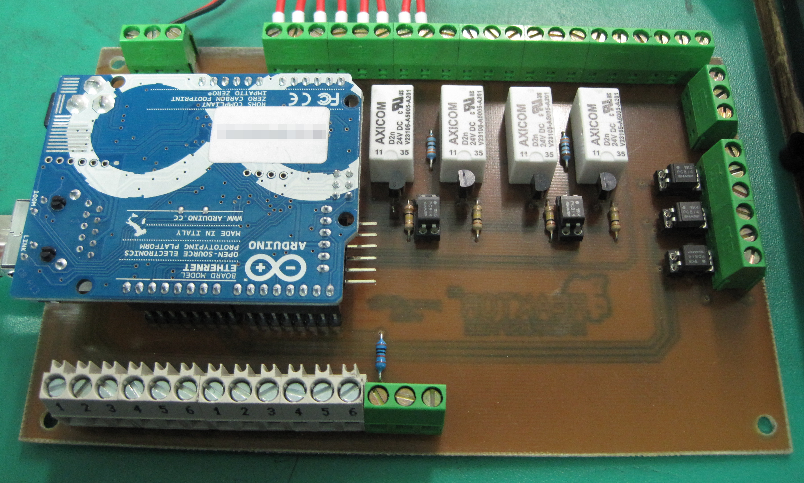
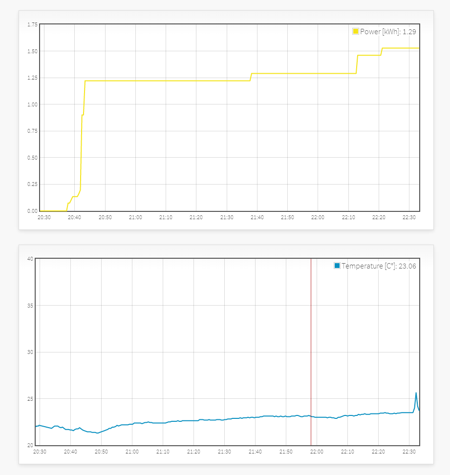
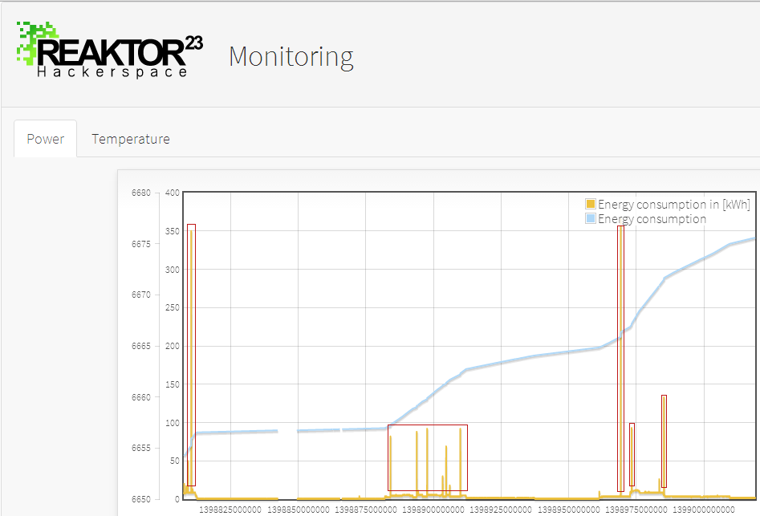

pwrcmdr

Verbrauchsmessung
Wir werden unsern Stromverbrauch messen & loggen.
Zum Einsatz kommt ein S0 Schnittstelle (Nein nicht S0 Bus von der ISDN Anlage ;-))

Projekt History
- 09.08.2011: Es wurden erste Versuche unternommen die S0 Schnittstelle auszuwerten. Leider erfolglos.
- 30.08.2011: Nach dem sich herausgestellt hat das die Drähte einfach verkehrt herum angeschlossen waren hat man auf dem Oszi nun saubere Pulse gesehen.
- 04.10.2011: Nach einigem hin und her bin ich zu dem Schluss gekommen, das ein [[http://arduino.cc/en/Main/ArduinoBoardEthernet|Arduino Ethernet Board]] billiger kommt als ein kompletter Eigenbau. Gesagt, getan. Board ist hier, Prototyp des Shields ist fertig. Fehlt nur noch der Code.
- 30.10.2012: Da der Prototyp nie mit code belebt wurde und sowieso eine geätzte Platine her musste, wurde heute eben diese Platine geätzt.
- 06.11.2012: Die fertig bestückte Platine ist komplett und die Basisfunktionen sind im Tischaufbau getestet. Nun soll die Platine noch in die Plastikbox die momentan die Schützsteuerung beherbergt eingebaut werden. \ 
- 22.04.2014: Pust Entstaub, Neuer code für das Arduino Rthernet ist geschrieben und zu 75% fertig. Eine Webapplication ist auch in der mache um einerseits verschiedenen Messwerte zu loggen, als diese auch in visuell ansprechender Form darzustellen. \ 
- 01.05.2014: Das System läuft soweit, leider kommt es ab und zu zu seltsamen Ausschlägen bei den den gezählten S0 Pulsen. \ 
- 13.05.2014: Die Platine wurde nochmal überarbeitet und ein Prototyp bei pcb-devboards bestellt. \

Dokumentation Version 1.0.5
- A0: Reserve Klemme 5V-A0-GND
- A1: Reserve Klemme 5V-A1-GND
- A2: Reserve Klemme 5V-A2-GND
- A3: Reserve Klemme 5V-A3-GND
- A4: Reserve Klemme 5V-A4-GND
- A5: Reserve Klemme 5V-A5-GND und 6x 1-wire Klemmen, per Brücke wählbar
- 0: Reserve Klemme 5V-0-GND
- 1: Reserve Klemme 5V-1-GND
- 2: S0 Interface (INT0)
- 3: Schützkreis #2 Status
- 4: N.C.
- 5: Schützkreis #2 AUS
- 6: Schützkreis #2 EIN
- 7: Schützkreis #1 Status
- 8: Schützkreis #1 AUS
- 9: Schützkreis #1 EIN
- 10: N.C.
- 11: N.C.
- 12: N.C.
- 13: N.C.